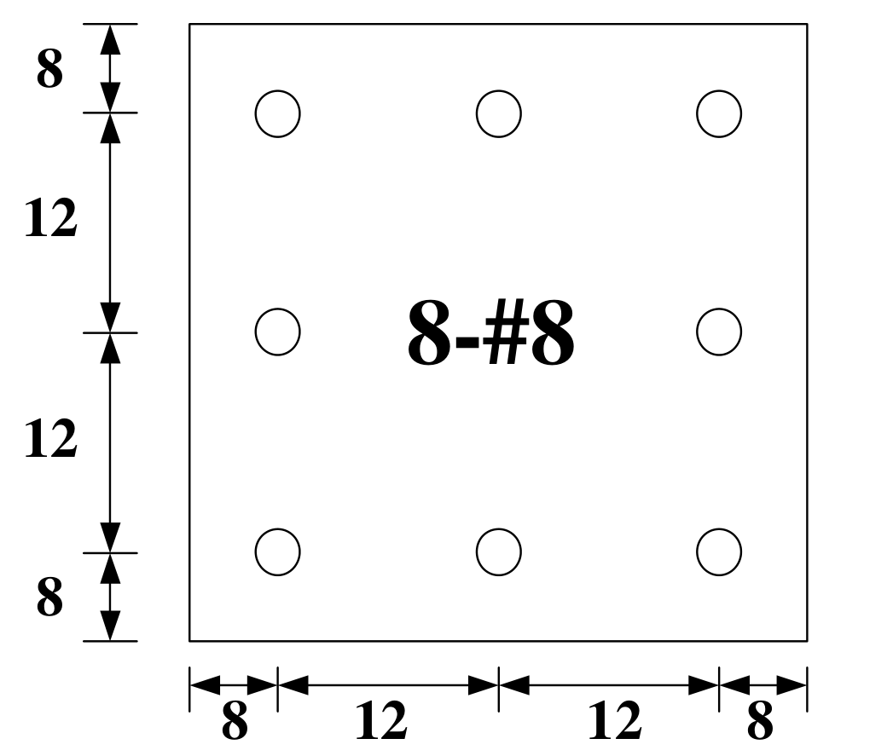
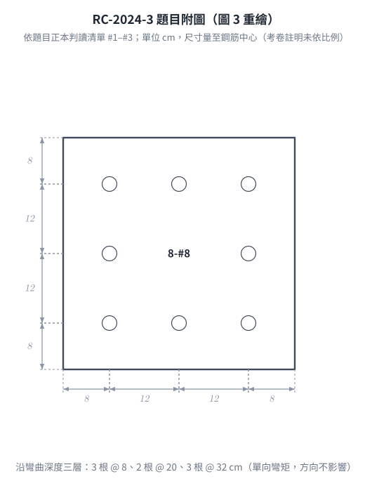
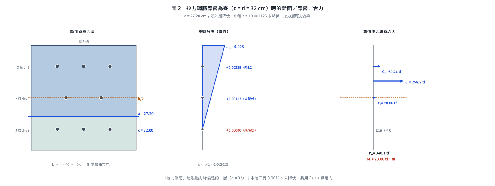

📄 題目正本：考卷原文・附圖・判讀清單（已確認）
RC-2024-3 題目正本
本檔只記錄考卷上寫了什麼、圖上畫了什麼，不含任何解法。解析見同資料夾
RC-2024-3.md。
判讀清單已經使用者確認（凍結）；本檔原則上不再修改（改動須回考卷原圖並記 log）。
| 項目 | 內容 |
|---|---|
| 考卷 | raw/exams/RC-2024_鋼筋混凝土設計與預力.pdf 第 2 頁（頁次 3－2），第三題 |
| 考年 | 民國 113 年（2024） |
| 配分 | 25 分 |
| 附圖 | RC-2024-3-fig-2.png（圖 3，500 dpi 重新擷取）；既有 RC-2024-3-fig-1.png 尺寸字太小，保留不刪 |
| 判讀狀態 | 已確認（2026-11-14 使用者確認；無不確定項；轉錄 2026-11-14；PyMuPDF 110 dpi 全頁目視＋抽出文字核對，附圖 500 dpi 放大；盲讀後才比對既有解析） |
1. 考卷原文（逐字）
三、某一正方形（40 cm×40 cm）柱斷面如圖 3 所示。若採用 8-#8（D25）主筋（$d_b$=2.54 cm，$A_b$=5.07 cm²、$f_y$=4200 kgf/cm²、$E_s$=2.04×10⁶ kgf/cm²）、混凝土（$f'_C$=280 kgf/cm²、$\varepsilon_u$=0.003）。此柱受軸力與單向彎矩。若柱破壞時，拉力鋼筋的應變恰為零。請計算斷面承受之軸力與破壞時承受之彎矩。（25 分）
2. 考卷給的公式、附表與參數
- 題文數值：40×40 cm；8-#8，$d_b=2.54$ cm、$A_b=5.07$ cm²；$f_y=4200$ kgf/cm²；$E_s=2.04\times10^6$ kgf/cm²；$f'_c=280$ kgf/cm²；$\varepsilon_u=0.003$。
- 卷首：「依據與作答規範：中國土木水利工程學會『混凝土工程設計規範與解說』（土木401-112），未依上述規範作答，不予計分。」
- 沒有給：$\beta_1$、彎曲方向（斷面對稱，不影響）、箍筋。
- 卷首注意事項：㈠可以使用電子計算器。㈡不必抄題，作答時請將試題題號及答案依照順序寫在試卷上，於本試題上作答者，不予計分。㈢本科目除專門名詞或數理公式外，應使用本國文字作答。
3. 附圖

圖面文字照錄：「8」「12」「12」「8」（左側與下方各一組）「8-#8」「圖 3 方形柱斷面（未依照比例尺繪製）」。
4. 判讀清單
| # | 項目 | 判讀 | 圖上／題文依據 | 把握 |
|---|---|---|---|---|
| 1 | 斷面 | 40×40 cm | 題文；尺寸 8+12+12+8＝40 | 確定 |
| 2 | 鋼筋配置 | 四角＋四邊中點共 8-#8；沿彎曲深度三層：$d'=8$ cm（3 根）、20 cm（2 根）、$d=32$ cm（3 根）；尺寸量至鋼筋中心 | 500 dpi：尺寸線端點對齊圓心 | 確定 |
| 3 | 彎曲方向 | 「單向彎矩」，方向未指定；斷面雙向對稱，任一主軸結果相同 | 題文、圖 3 | 確定 |
| 4 | 中性軸條件 | 「拉力鋼筋」＝距壓力緣最遠一層（$d=32$ cm）；其應變為零 → $c=d=32$ cm | 題文 | 確定（解讀） |
| 5 | 所求的量 | 破壞（$\varepsilon_u=0.003$）時的標稱軸力 $P_n$ 與標稱彎矩 $M_n$（不乘 $\phi$），彎矩對斷面中心 | 題文「破壞時承受之彎矩」 | 確定（解讀） |
| 6 | 圖不依比例 | 以標註數字為準 | 圖說「未依照比例尺繪製」 | 確定 |
| 7 | 考卷沒有給 | $\beta_1$ 需依規範自行採用 | 題文 | 確定 |
轉錄：2026-11-14（RC-U1-2 題目正本推廣・批 1）
確認：2026-11-14 使用者確認（RC-U1-2 題目正本推廣・批 1，關卡一）
考題編號：RC-2024-3
主分類： RC-U1-2 RC 柱強度分析與設計
副分類： 無
設計法： USD 強度設計法
標籤： 方形柱 P-M互制 拉力鋼筋應變為零 應變相容 壓力鋼筋未降伏 中性軸深度 軸力彎矩組合
1. 題目（考卷原文見題目正本）
考卷原文、公式／附表、附圖與判讀清單（已確認）見
RC-2024-3-problem.md。本節只列解題時最容易讀錯的地方與本解使用的記號；題意以題目正本為準。

重繪自考卷附圖，依題目正本判讀清單；攔下把 8 cm 當淨保護層、把拉力鋼筋層判錯的錯誤。
常見誤讀
| 項目 | 正確判讀 | 常見誤讀 |
|---|---|---|
| 尺寸基準 | 8／12／12／8 量至鋼筋中心（判讀 #2） | 8 cm 當淨保護層 |
| 拉力鋼筋 | 距壓力緣最遠一層 $d=32$ cm，應變為零 → $c=32$ cm（判讀 #4） | 取中間層或另解 $c$ |
| 所求 | 破壞時標稱 $P_n$、$M_n$（判讀 #5） | 乘 $\phi$ |
本解記號： $b=h=40$ cm；自壓力面三層 $y_1=8$（3 根）、$y_2=20$（2 根）、$y_3=32$ cm（3 根）；$A_b=5.07$ cm²；$\varepsilon_u=0.003$。
2. 考題核心精神與出題者意圖 (Core Concepts & Examiner's Intent)
核心觀念： P-M 互制圖上的特殊點——「拉力鋼筋應變 = 0」等同於中性軸剛好落在底排鋼筋處，此為平衡點（$\varepsilon_t = \varepsilon_y$）與純壓縮點之間的某個位置，是直接用應變相容求解的題型。
出題意圖：
- 測試學生能否正確設定應變圖（c = dt = 32 cm）
- 測試各排鋼筋應變計算與降伏判斷
- 注意壓力鋼筋位於應力塊內，需減去混凝土已計算的 $0.85f'_c$ 貢獻
- 考驗力矩計算方向感（取矩於形心軸）
3. 解題戰略地圖與陷阱分析 (Strategic Roadmap & Trap Analysis)
作戰計畫：
Step 1：確定 c = dt = 32 cm（εt = 0 → NA 在底排）
Step 2：計算各排鋼筋應變，判斷降伏
Step 3：計算各排鋼筋有效應力（壓力筋在應力塊內需減 0.85f'c）
Step 4：算 Pn（軸力平衡）
Step 5：算 Mn（對形心取矩）
關鍵陷阱：
| # | 陷阱 | 正確做法 |
|---|---|---|
| ① | 應變圖設定錯誤（c 不等於 dt） | $\varepsilon_t = 0$ 且假設線性應變 → $c = d_t = 32\ \text{cm}$ |
| ② | 壓力鋼筋應力計算時忘記減去 $0.85f'_c$（鋼筋在應力塊內已有混凝土應力） | 壓力筋在塊內：$f_{s,\text{net}} = f_s - 0.85f'_c$ |
| ③ | 底排鋼筋（εt=0）誤以為有拉力貢獻 | $f_t = E_s \times 0 = 0$，底排鋼筋對力矩無貢獻 |
| ④ | 中排鋼筋（位於形心）取矩貢獻 = 0 但軸力貢獻 ≠ 0 | 計算 Pn 時中排鋼筋要加入；計算 Mn 時力臂為 0 |
3.5 變數層次分析（Variable Hierarchy Analysis）
複習提示：第一次解題後，在每個卡住的知識點旁標記
⚠；第二次複習時只看有⚠的項目。
最終目標
由 εt = 0 的幾何條件確定 c → 計算各排鋼筋應力 → 求解 Pn 與 Mn
本題關鍵公式鏈
$$\varepsilon_t = 0 \Rightarrow c = d_t = 32\ \text{cm} \Rightarrow a = \beta_1 c = 27.2\ \text{cm}$$
$$\varepsilon_{s,i} = \varepsilon_u \cdot \frac{c - y_i}{c},\quad f_{s,i} = \min(E_s \varepsilon_{s,i},\ f_y)$$
$$P_n = 0.85f'_c b a + \sum_i A_{s,i}(f_{s,i} - 0.85f'_c)\big|_{y_i \leq a} + \sum_j A_{s,j} f_{s,j}\big|_{y_j > a}$$
$$M_n = 0.85f'_c b a \!\left(\frac{h}{2}-\frac{a}{2}\right) + \sum_i A_{s,i}(f_{s,i}-0.85f'_c)\!\left(\frac{h}{2}-y_i\right)\bigg|_{y_i \leq a}$$
L1：題目直接給定
| 符號 | 數值 | 說明 |
|---|---|---|
| $b = h$ | 40 cm | 方形柱邊長 |
| $y_1$ | 8 cm（頂排，from top） | 壓力面→頂排鋼筋距離 |
| $y_2$ | 20 cm（中排，形心） | 壓力面→中排鋼筋距離 |
| $y_3$ | 32 cm（底排） | 壓力面→底排鋼筋距離 |
| $A_{s1}$ | 3×5.07=15.21 cm² | 頂排 3-#8 面積 |
| $A_{s2}$ | 2×5.07=10.14 cm² | 中排 2-#8 面積 |
| $A_{s3}$ | 3×5.07=15.21 cm² | 底排 3-#8 面積 |
| $f'_c$ | 280 kgf/cm² | 混凝土抗壓強度 |
| $f_y$ | 4200 kgf/cm² | 鋼筋降伏強度 |
| $\varepsilon_u$ | 0.003 | 混凝土極限壓應變 |
| $\varepsilon_t$ | 0（題目條件） | 底排鋼筋應變 |
L2：需知識點推導
Step A：由 εt=0 確定 c
| 符號 | 公式/來源 | 卡關? |
|---|---|---|
| $c$ | $\varepsilon_t=0$ 且線性應變 $\Rightarrow c = y_3 = 32\ \text{cm}$ | |
| $\beta_1$ | $f'_c=280\ \text{kgf/cm}^2 \leq 280 \Rightarrow \beta_1=0.85$ | |
| $a$ | $\beta_1 \times c = 0.85 \times 32 = 27.2\ \text{cm}$ |
Step B：各排鋼筋應變與應力
| 排次 | $y_i$ | $\varepsilon_{s,i}$ | $\varepsilon_y$? | $f_{s,i}$ | 在塊內? |
|---|---|---|---|---|---|
| 頂排 | 8 cm | $0.003\times24/32 = 0.00225$ | $>0.002059$ ✓降伏 | 4200 kgf/cm² | $y_1=8<a=27.2$ ✓ |
| 中排 | 20 cm | $0.003\times12/32 = 0.001125$ | $<0.002059$ 未降伏 | 2295 kgf/cm² | $y_2=20<27.2$ ✓ |
| 底排 | 32 cm | 0（題目給定） | — | 0 | $y_3=32>27.2$ ✗ |
Step C：有效鋼筋力（在塊內需減 0.85f'c）
| 排次 | 公式 | 數值 |
|---|---|---|
| 頂排 | $A_{s1}(f_{s1}-0.85f'_c)=15.21\times3962$ | 60,262 kgf（壓） |
| 中排 | $A_{s2}(f_{s2}-0.85f'_c)=10.14\times2057$ | 20,858 kgf（壓） |
| 底排 | $A_{s3}\times0=0$ | 0 |
L3：深層知識（不懂就卡住）
| 知識點 | 說明 | 卡關? |
|---|---|---|
| 應變為零等於中性軸在該層 | 線性應變分布：$\varepsilon = \varepsilon_u(c-y)/c = 0 \Rightarrow y = c$ | |
| 鋼筋在壓力塊內需減 $0.85f'_c$ | 混凝土壓力公式 $0.85f'_c \times b \times a$ 已計算了包含鋼筋所在的混凝土面積，鋼筋的淨貢獻為 $(f_s - 0.85f'_c)$ | |
| 中排鋼筋在 P-M 計算中的分工 | 中排位於形心 → 對 $M_n$ 力臂=0（無力矩貢獻）；但仍有軸力貢獻 | |
| $\varepsilon_y$ 的計算 | $\varepsilon_y = f_y/E_s = 4200/2{,}040{,}000 = 0.002059$；不可假設固定為 0.002 |
4. 步驟化詳細計算過程 (Step-by-Step Detailed Calculation)
Step 1：確定中性軸深度 c
題目條件：拉力鋼筋（底排，$y_3 = 32\ \text{cm}$）應變 $\varepsilon_t = 0$。
由線性應變分布（壓力面在頂部，$\varepsilon_u = 0.003$）：
$$\frac{\varepsilon_u}{c} = \frac{\varepsilon_u - \varepsilon_t}{c - y_3} \Rightarrow \varepsilon_t = 0 \Rightarrow \boxed{c = y_3 = 32\ \text{cm}}$$
等值應力塊深度（$f'_c = 280 \leq 280\ \text{kgf/cm}^2$，$\beta_1 = 0.85$）：
$$a = \beta_1 \cdot c = 0.85 \times 32 = \mathbf{27.2\ \text{cm}}$$
Step 2：各排鋼筋應變
$$\varepsilon_y = \frac{f_y}{E_s} = \frac{4200}{2{,}040{,}000} = 0.002059$$
頂排（$y_1 = 8\ \text{cm}$，在壓力塊內 $8 < 27.2$）：
$$\varepsilon_{s1} = \varepsilon_u \cdot \frac{c - y_1}{c} = 0.003 \times \frac{32 - 8}{32} = 0.003 \times 0.75 = 0.00225\ \text{（壓縮）}$$
$\varepsilon_{s1} = 0.00225 > \varepsilon_y = 0.002059$ → 頂排降伏 → $f_{s1} = f_y = 4200\ \text{kgf/cm}^2$
中排（$y_2 = 20\ \text{cm}$，在壓力塊內 $20 < 27.2$）：
$$\varepsilon_{s2} = 0.003 \times \frac{32 - 20}{32} = 0.003 \times 0.375 = 0.001125\ \text{（壓縮）}$$
$\varepsilon_{s2} = 0.001125 < \varepsilon_y$ → 中排未降伏
$$f_{s2} = E_s \varepsilon_{s2} = 2{,}040{,}000 \times 0.001125 = 2{,}295\ \text{kgf/cm}^2\ \text{（壓縮）}$$
底排（$y_3 = 32\ \text{cm}$，在壓力塊外 $32 > 27.2$）：
$$\varepsilon_t = 0 \Rightarrow f_t = 0\ \text{（零應力）}$$
Step 3：計算各力（鋼筋在壓力塊內減去混凝土貢獻）
混凝土壓力合力：
$$C_c = 0.85 f'_c \cdot b \cdot a = 0.85 \times 280 \times 40 \times 27.2 = 238 \times 40 \times 27.2$$
$$= 9{,}520 \times 27.2 = 258{,}944\ \text{kgf}$$
（作用點：距頂部 $a/2 = 13.6\ \text{cm}$）
頂排鋼筋淨壓力（在塊內，$y_1=8 < a=27.2$）：
$$C_{s1} = A_{s1}(f_{s1} - 0.85f'_c) = 15.21 \times (4200 - 238) = 15.21 \times 3962 = 60{,}262\ \text{kgf}$$
中排鋼筋淨壓力（在塊內，$y_2=20 < a=27.2$）：
$$C_{s2} = A_{s2}(f_{s2} - 0.85f'_c) = 10.14 \times (2295 - 238) = 10.14 \times 2057 = 20{,}858\ \text{kgf}$$
底排鋼筋力 = 0（$f_t = 0$）
Step 4：標稱軸力 $P_n$
$$P_n = C_c + C_{s1} + C_{s2} = 258{,}944 + 60{,}262 + 20{,}858$$
$$\boxed{P_n = 340{,}064\ \text{kgf} \approx 340.1\ \text{tf}\ (\text{壓力})}$$
Step 5：標稱彎矩 $M_n$（對形心軸取矩，形心在 $h/2 = 20\ \text{cm}$ from top）
各力的力臂（以形心為原點，正方向朝壓力端）：
| 力 | 作用位置 | 力臂 = 20 - 位置 | 方向 |
|---|---|---|---|
| $C_c = 258{,}944$ kgf | $13.6$ cm from top | $20 - 13.6 = +6.4$ cm | 正彎矩 |
| $C_{s1} = 60{,}262$ kgf | $8$ cm from top | $20 - 8 = +12$ cm | 正彎矩 |
| $C_{s2} = 20{,}858$ kgf | $20$ cm from top | $20 - 20 = 0$ | 無力矩 |
| $F_{s3} = 0$ | $32$ cm from top | $32 - 20 = 12$ cm | 零力 |
$$M_n = C_c \times 6.4 + C_{s1} \times 12 + C_{s2} \times 0$$
$$= 258{,}944 \times 6.4 + 60{,}262 \times 12$$
$$= 1{,}657{,}242 + 723{,}144$$
$$\boxed{M_n = 2{,}380{,}386\ \text{kgf-cm} \approx 23{,}804\ \text{kgf-m} \approx 23.8\ \text{tf-m}}$$

圖 2 拉力鋼筋應變為零時的斷面／應變／合力。「拉力鋼筋」是離壓力緣最遠的一層，故 $c = d = 32$ cm；中層只有 0.0011、未降伏——攔下拉力層判錯、中層誤當降伏的錯。
結果彙整
| 項目 | 計算值 |
|---|---|
| 中性軸深度 $c$ | 32 cm（= 底排鋼筋位置） |
| 等值應力塊深度 $a$ | 27.2 cm |
| 頂排鋼筋應力 $f_{s1}$ | 4200 kgf/cm²（降伏） |
| 中排鋼筋應力 $f_{s2}$ | 2295 kgf/cm²（未降伏） |
| 底排鋼筋應力 $f_{t}$ | 0（應變為零） |
| 標稱軸力 $P_n$ | 340 tf（壓力） |
| 標稱彎矩 $M_n$ | 23.8 tf-m |
| 偏心距 $e = M_n/P_n$ | $\approx 7.0\ \text{cm}$ |
5. 關鍵爭議點與進階探討 (Critical Issues & Advanced Discussion)
爭議點 1：此點在 P-M 互制圖上的位置
$\varepsilon_t = 0$ 對應中性軸在最外側拉力筋位置。在 P-M 互制圖上，這個點位於平衡點（$\varepsilon_t = \varepsilon_y$）與純壓點之間，且幾乎正在兩者中點：$P_b = 136.6$ tf、$P_0 = 541.5$ tf、本題 $P_n = 340.1$ tf，位置比例 $(P_n - P_b)/(P_0 - P_b) = 0.50$。與平衡點比較：平衡點的 $c_b = \varepsilon_u d/(\varepsilon_u + \varepsilon_y) = 0.003\times32/0.005059 = 18.97\ \text{cm} < c = 32\ \text{cm}$，確認本題 $c > c_b$，軸力 $P_n > P_{nb}$（壓力控制區）。
爭議點 2：壓力鋼筋淨貢獻 $(f_s - 0.85f'_c)$ 的意義
混凝土壓力公式 $C_c = 0.85f'_c \times b \times a$ 計算了整個 b×a 面積的平均壓力，包含鋼筋所在位置的混凝土。鋼筋實際上置換了部分混凝土，因此鋼筋的淨貢獻為：
$$C_{s,\text{net}} = A_s \cdot f_s - A_s \cdot 0.85f'_c = A_s(f_s - 0.85f'_c)$$
若忽略此修正（簡化法）：$P_n = 340{,}064 + 15.21\times238 + 10.14\times238 = 340{,}064 + 3{,}620 + 2{,}413 = 346{,}097\ \text{kgf}$（誤差約 1.8%）。考場允許簡化，但精確法得分更高。
進階：為何中排鋼筋對彎矩無貢獻？
中排鋼筋（$y_2 = 20\ \text{cm}$）恰好位於斷面形心（$h/2 = 20\ \text{cm}$），其對形心的力臂為零。中排鋼筋只增加軸力（$C_{s2} = 20{,}858\ \text{kgf}$）而不改變彎矩。這是方形柱對稱配筋的特點：若無側向彎矩，中間層鋼筋的力矩貢獻恰好相消。
修正日期：2026-11-14（§1 改為指向題目正本，插入重繪附圖 figs/RC-2024-3-fig-1-problem.svg、改寫常見誤讀與本解記號；本行非答案勘誤）
圖解補繪：2026-11-14（向量圖 1 張〔圖 2 斷面／應變／合力〕，腳本 gen_RC-2024-3.py，可重跑；腳本檔尾對 §4 公佈值做 assert）